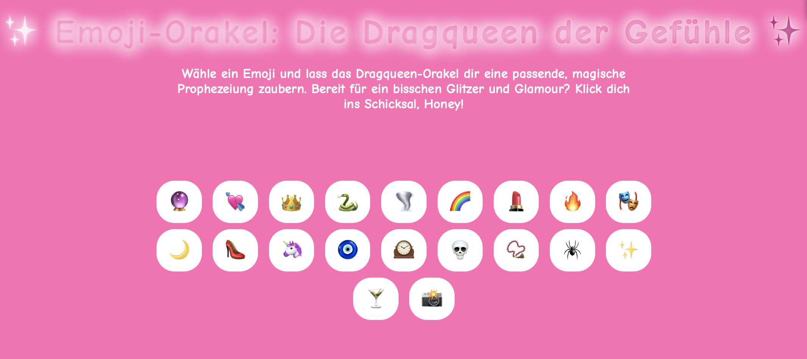

text, the universal text interface
Reflektion
m Rahmen des Projekts "Text the Universal Interface" haben wir uns zunächst näher mit Large Language Models (LLMs) auseinandergesetzt. LLMs sind KI-gestützte Modelle, die auf Basis von Textdaten trainiert wurden und in der Lage sind, Sprache zu verstehen, zu generieren und kontextabhängige Vorhersagen zu treffen. In der Projektphase ging es darum, ein Interface zu entwickeln, das nicht nur auf reine Texteingaben und -ausgaben setzt. Stattdessen sollten alternative Formen der Interaktion genutzt werden, um die Funktionsweise eines LLMs auf kreative Weise zu erweitern. In meiner Umsetzung entstand das "Drag Queen Orakel". Nutzer*innen wählen ein vorgegebenes Emoji aus, das mit einer bestimmten Bedeutung hinterlegt ist. Dieses Emoji dient zusammen mit zusätzlichen Kontextinformationen, insbesondere Wetterdaten, Standort und Uhrzeit des Nutzers, als Input für das LLM, um eine individuell generierte Vorhersage im Stil einer Drag Queen zu erzeugen. Ein wesentlicher Aspekt dabei war das Prompt Engineering. Dabei habe ich die Eingaben so strukturiert, dass der Output nicht nur inhaltlich, sondern auch stilistisch zu meiner Idee passte. Dazu gehörte unter anderem, die maximale Anzahl an Wörtern festzulegen und die Persönlichkeit des Outputs auf humorvolle, performative Weise zu gestalten. Die technische Umsetzung erfolgte über eine Kombination aus Webtechnologien, wie der OpenWeather API und der Geolokalisierung des Browsers, wobei die Eingaben zu einem Prompt für das LLM zusammengeführt und über eine API-Schnittstelle (in diesem Fall Val Town) verarbeitet wurden. Rückblickend konnte ich beobachten, wie sensibel LLMs auf die Formulierung des Prompts reagieren. Kleine Anpassungen hatten unmittelbare Auswirkungen auf Tonalität, Länge und Stil des Outputs. Die Nutzerführung über die Emojis funktionierte intuitiv und ermöglichte den gewünschten Effekt. Gleichzeitig zeigte sich jedoch, dass die Kombina mehrerer Datenquellen, insbesondere die zeitverzögerte Abfrage von Wetterdaten, schwieriger als erwartet war und einen großen zeitlichen Anteil in Anspruch nahm. Gestalterisch hat das Projekt mir besonders viel Freude bereitet. Die Möglichkeit, die Interaktion frei zu gestalten und die Persönlichkeit des Outputs bewusst zu steuern, machte den Entwicklungsprozess spannend und kreativ. Insgesamt konnte ich durch das Projekt ein vertieftes Verständnis für LLMs, Prompt Engineering und die Kombination verschiedener Input-Quellen gewinnen.
